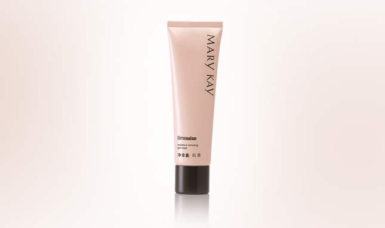

今天你睡好了吗？从元旦开始，每个月几乎都有节日接踵而来，晚上也无法淡定睡觉了吧。别怕，玫琳凯帮你睡好美容觉，24小时美丽不透支哦～
夜晚十点至凌晨两点是肌肤的黄金修复期，如果在这期间不睡觉，容易导致细胞修护能力低下、代谢减缓、皮肤的暗沉发黄、干燥粗糙。如果真的非不得已必须熬夜，彻底的保养就是绝对必须的。这时候 “精华加面膜”就是最能当机立断、救死扶伤的重要利器了！做法就是用先叠用精华，最后再上一层睡眠面膜再去睡，隔日早上就会发现肌肤光彩重现了！
梦唤新生面膜是一款加法面膜，不仅可以当成睡眠面膜使用，还可以用于“面膜加减法”：所谓面膜加减法，就是在每周2-3次的敷面膜时机，搭配具有深层清洁功能的“减法”面膜，例如玫琳凯的经典护肤系列面膜，能够帮助角质更新，让肌肤更加细致。使用完“减法”面膜的下次则建议搭配具有“加法”效果的面膜，给肌肤进行滋补保养，比如 “梦唤新生面膜”。这样的搭配，能在将肌肤堆积的老死角质给清理干净之后，将面膜中好的成分吸收进来，从而促进肌肤的新陈代谢，还肌肤一个更年轻健康的状态。
